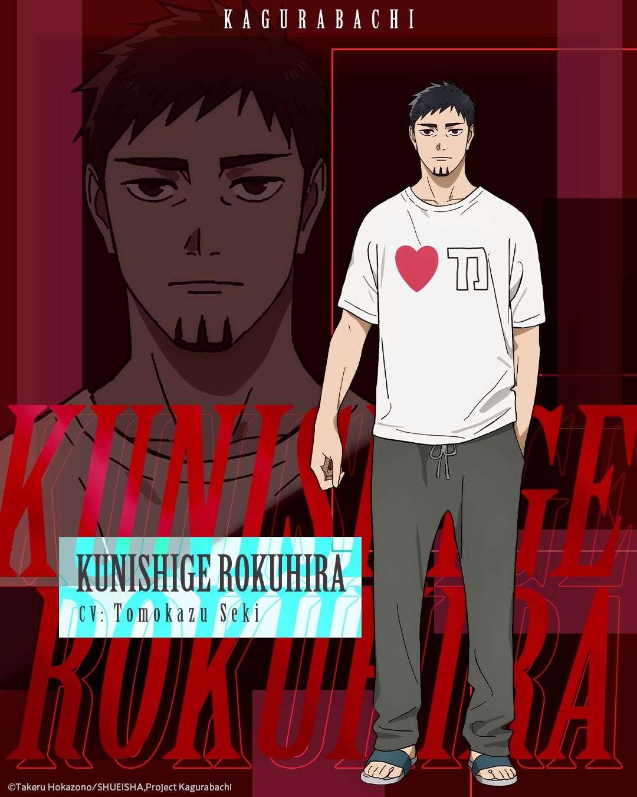
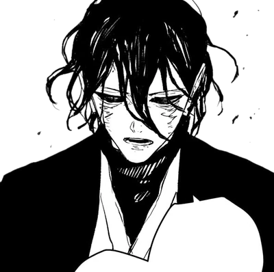
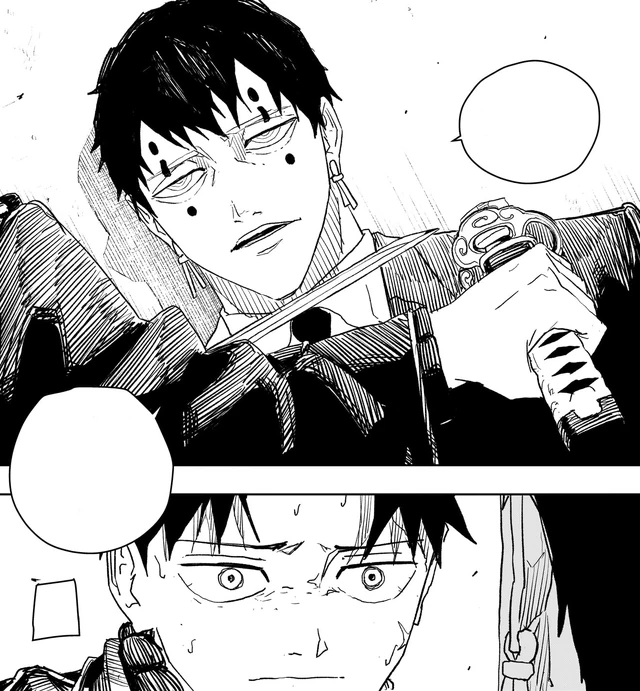
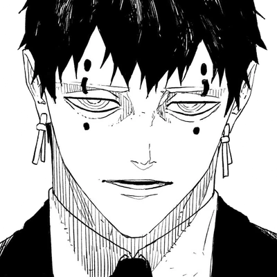
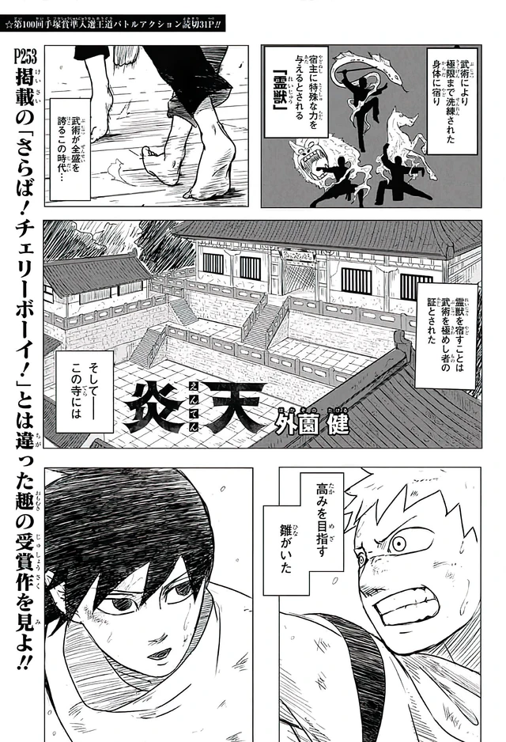

The smith
Kunishige Rokuhira is the only smith who ever stabilized Datenseki. During the Seitei War he cut six Enchanted Blades for the state. They reversed the front at one year and five months. After the treaty, his closest friend, Akemura Soga, the Sword Master, Chihiro’s uncle, used Magatsumi to empty the island anyway. About 200,000 civilians. Flowers. The Kamunabi filed it as victory and hid the man.
Kunishige confiscated the six swords, hid with help from Azami and Shiba, and raised his son over a cellar he could not smash. Every attempt to destroy the wartime blades failed. About fifteen years after the war they forged a seventh together: Enten. Not an heirloom. A retraction. Its True Realm is Magatsumi’s death.




The raid
Three years before the main story, the Hishaku raided the house. They killed Kunishige in front of Chihiro and stole the wartime six. Enten stayed with the son. Hokuto murdered Ibuki Misaka so Cloud Gouger’s contract opened. The remaining bearers were locked in Sanso fortresses. The Kamunabi later learned a director had leaked the address.
Chihiro is 18. Birthday 11 August. He went into the Tokyo underworld with Togo Shiba to recover the swords and kill the men who ordered the raid. He is typically stoic. He will not spend innocent lives for the hunt. That line is the difference between him and almost every adult who touched the blades during the war.

The goldfish
Enten shows as water and three goldfish, Kuro, Aka, Nishiki, named for the bowl in the workshop. Hokazono almost drew koi. Goldfish won because of the fins and because the bowl recorded who the fish liked more. A wartime blade manifests weather, flowers, banquet ghosts. Enten manifests the house. The fighting language is a household object first.
Kuro is the black slash. Aka drinks an attack and spends it. Nishiki is the tricolor cloak, with a built-in shrug against other Enchanted Blade ailments, the design brief showing through the technique list. Full interview: Goldfish, not koi. The design brief: What Enten was forged for.




The job
That is the whole premise. A smith who ended a war and spent the rest of his life trying to unmake the ending. A son who inherited the counter, not the trophy. A state that called a massacre a victory. Ten criminals with one plan for Shinuchi. The public knows six Enchanted Blades. The Kamunabi want six. Chihiro’s early swagger, the seventh sword, the secret cellar, reads as shōnen inheritance. It is not. Enten exists because the wartime steel would not break on an anvil.
The story page is what happens when that file hits Tokyo. Vs. Sojo teaches the rules. The Rakuzaichi lists Shinuchi. Sword Bearer Assassination is the long book. Part 2 returns to Irishima and the forge before anyone called it a cellar.
The raid’s paperwork
Kasen leaked the address. Hokuto and Uran were in the house. Ibuki died in the same campaign. Enten stayed. The six wartime blades left. Sanso fortresses locked the rest. Sojo bought weather in October. That is the premise with the captions filled in. Chihiro does not start the book knowing his uncle is the Sword Master or his mother is a princess in a fire. The book is the education. Part 2 is the kiln. See Kasen, Hokuto, Ibuki.